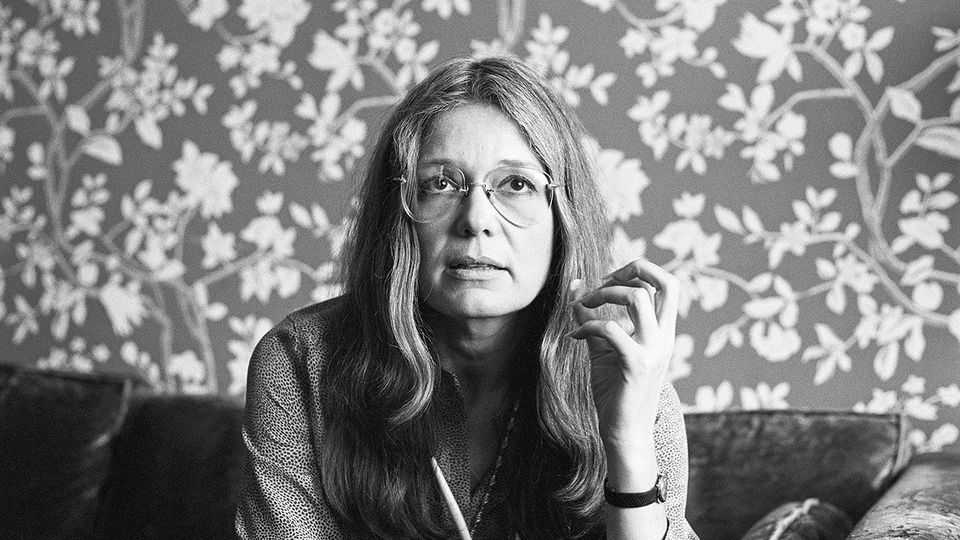

Gloria Steinem changed the world for American women
The journalist and campaigner for liberation died on September 2nd, aged 92

Sep 17th 2026
Her blue satin costume was a pain. It was so tight that the zip snagged her skin when she was fastened up, and cut so high on the leg that her hip-bones showed. Her dresser had pushed a whole plastic dry-cleaning bag down her front, explaining as she did so that “Everybody stuffs.” Stuffed in their tips, she meant, while Gloria Steinem, holding a drinks tray aloft on the palm of her left hand, would bend her knees into the Bunny Dip and say, pertly, “Sir, you are not allowed to touch the Bunnies.”
Working undercover at the Playboy Club on East 59th Street made a great story for Show magazine in the summer of 1963. It also made her feet so swollen and sore, on three-inch heels, that she could hardly walk. The ad she had replied to promised earnings of $200-300 a week; for an eight-hour day, she earned precisely $12. She also risked demerits for a host of things including lateness, runs in stockings and crooked Bunny ears.
In retrospect, it wasn’t her smartest idea. She had hoped to write a searing exposé of women’s exploitation, but many critics thought it frivolous. She was surely just a pretty face, and even her editor and mentor at New York magazine, Clay Felker, had partly hired her for her “great legs”. So it was back to fashion, table lamps and 101 ways with hamburger. Yet she hated that beat. She burned to write the sharp political stories that were then the province of men, but from the viewpoint of a woman. Within a decade, in 1971, she had co-founded a magazine that did exactly that.
Ms magazine set out to explode all dainty hearth-and-home thinking. Women wrote it and ran it. The trial edition carried on its cover a weeping and pregnant Goddess Kali with her eight blue arms displaying the ridiculous complexity of women’s tasks: a clock, a telephone, a mirror, a skillet, a steering wheel, a typewriter, a rake and an iron. The cover of the first full issue showed Wonder Woman, who had recently been stripped of her powers by DC Comics, striding forth again with her magic lasso dazzling to tear baddies out of the sky and fight injustice. The contents included “Money for Housework”, “Body Hair: The Last Frontier” and a roll-call of famous women admitting “We Have Had Abortions”.
There was a special reason for that piece. She had had an abortion herself, in 1957 in London, where the procedure was just as illegal as it was in America. She had never told a soul about it; it was her choice, her life. But one day in 1969 she went to cover a meeting of women in Greenwich Village, and found them discussing their own abortions. She saw the comforting power of sisters talking together, comparing their adversity, disclosing matters they could not mention to men. The mission of Ms was to become a forum like that, but on a national scale. (It worked; the 300,000 initial run sold out in eight days, while the Letters pages overflowed.) Her own mission was not just to write fulminating essays and books, but to lecture and to organise “talking circles” in bookstores and malls and on campuses all across the land.
That same year, along with Betty Friedan and two Democratic congresswomen, Bella Abzug and Shirley Chisholm, she founded the National Women’s Political Caucus. Its main purpose was to get more women into political office, but what then? Obviously, to her mind, equal pay for equal work; easily accessible, or free, day care; stricter controls on pornography, and abortion choice. All to be guaranteed by the Equal Rights Amendment, which would enshrine in the constitution full legal equality with men. It would not end the patriarchy overnight, and might not even make them any more use in the kitchen, but that would come in time. She was no man-hater. She had had enough happy relationships to know that men could do nurturing, too.
Her father had also taught her that. Though her parents had divorced in the end, when she was ten, he had cared for Gloria whenever her mentally unstable mother could not. (For seven years after he left it was her own job to feed her, as she lay in bed, with bologna sandwiches and dime pies; until senior year in high school, education was haphazard.) They had been an itinerant family, following wherever her father’s antiques-trading took him. The result was that, for her, settling was always temporary and the open road was home. Travelling the highways was now her work, a reminder of how she had “walked the villages” with friends in India in the late 1950s, telling the poor about Gandhi.
In America too, she did not go alone. For one thing, at the start, she was terrified of public speaking. She was also very low on self-esteem. Her long hair and aviator glasses, which looked so glamorous, were principally designed to hide her face. She wondered if she might simply crack one day, like her mother. The media latched on to her as the photogenic leader of the women’s movement, but she didn’t want that label. (It led, among other things, to her falling-out with Friedan and the splitting of the campaign.) More practically, she liked to travel with a companion who did not have her middle-class preciseness of speech and her magna cum laude from Smith; someone who could argue from the perspective of a poor or black working-class woman, showing that the liberation struggle was for everywoman, everywhere.
That struggle went on all through the last decades of the 20th century and into the 21st. The ERA, though many states endorsed it, never became law. Roe v Wade legalised abortion nationwide in 1973, only to be reversed in 2022. A woman candidate for president was crazily rejected for a chauvinist despot. But women became free agents in many other ways. When she eventually married, in 2000, it wasn’t she who had changed. The culture had. Thanks largely to the movement, women had learned to reject their role as man-servicers and take charge of their own lives. But rather than feeling proud of herself, she was proud of them.
The Playboy Club in New York City, with its so-tight Bunny suits and so-tweakable fluffy white tails, closed down in 1986. ■